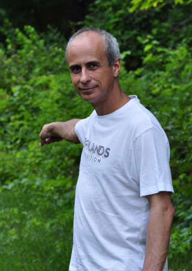

Nelson Luís Dias
Table of Contents
1. Bem-vindos (Welcome)
This site is searchable. See HELP on the right.

2. Afiliação (Affiliation)
Professor Titular, Departamento de Engenharia Ambiental, Universidade Federal do Paraná (http://www.dea.ufpr.br)
- Curso de Graduação em Engenharia Ambiental (http://www.ambiental.ufpr.br)
- Programa de Pós-Graduação em Engenharia Ambiental (http://www.ppgea.ufpr.br)
- Programa de Pós-Graduação em Métodos Numéricos em Engenharia (http://www.ppgmne.ufpr.br)
Professor, Department of Environmental Engineering, Federal University of Paraná (http://www.dea.ufpr.br)
- Environmental Engineering Course (http://www.ambiental.ufpr.br)
- Graduate Program in Environmental Engineering (http://www.ppgea.ufpr.br)
CV Lattes (Vita): http://lattes.cnpq.br/5149356080083086
ORCID: https://orcid.org/0000-0002-9770-8595
Minha tese de doutorado | My PhD thesis (com correções; with corrections)
Memorial de progressão para o nível de Professor Titular
Tel: +55-41-3320-2025
3. Biografia (Biography)
Nasci no Rio de Janeiro em 1961. Fiz minha graduação em Engenharia Civil pela Universidade Federal do Rio de Janeiro (1983). Sou Mestre em Ciências em Engenharia Civil pela Universidade Federal do Rio de Janeiro (1986), e Doutor em Ciências em Engenharia Civil e Ambiental pela Universidade Cornell (1993). Em 2007, fiz um estágio sabático na Universidade da Geórgia. Desde 1995, sou Professor da Universidade Federal do Paraná, onde atualmente sou Professor Titular no Departamento de Engenharia Ambiental. Leciono no Curso de Engenharia Ambiental e no Programa de Pós-Graduação em Engenharia Ambiental.
I was born in Rio de Janeiro, Brazil, in 1961. I graduated in Civil Engineering at the Federal University of Rio de Janeiro in 1983. In 1986, I got My Master's in Civil Engineering at the same university. I have a Ph.D. in Civil and Environmental Engineering from Cornell University (1993). In 2007, I spent a sabbatical year at the University of Georgia. Since 1995, I have been a professor at the Federal University of Paraná (UFPR) in Brazil. I am currently a Professor at the Environmental Engineering Department, and I teach undergraduate courses at the Environmental Engineering Course, and Graduate Courses at the Graduate Program in Environmental Engineering.